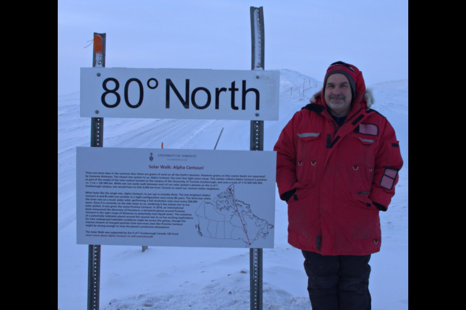
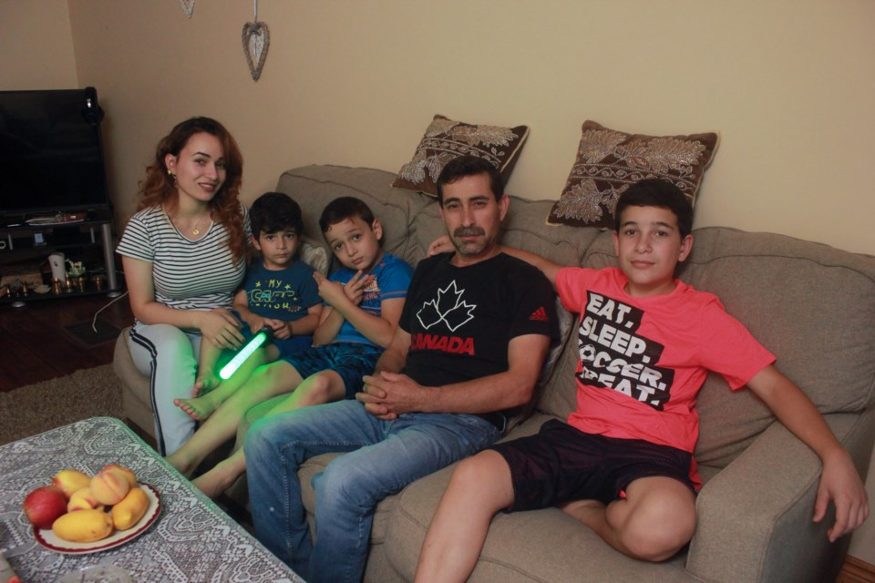
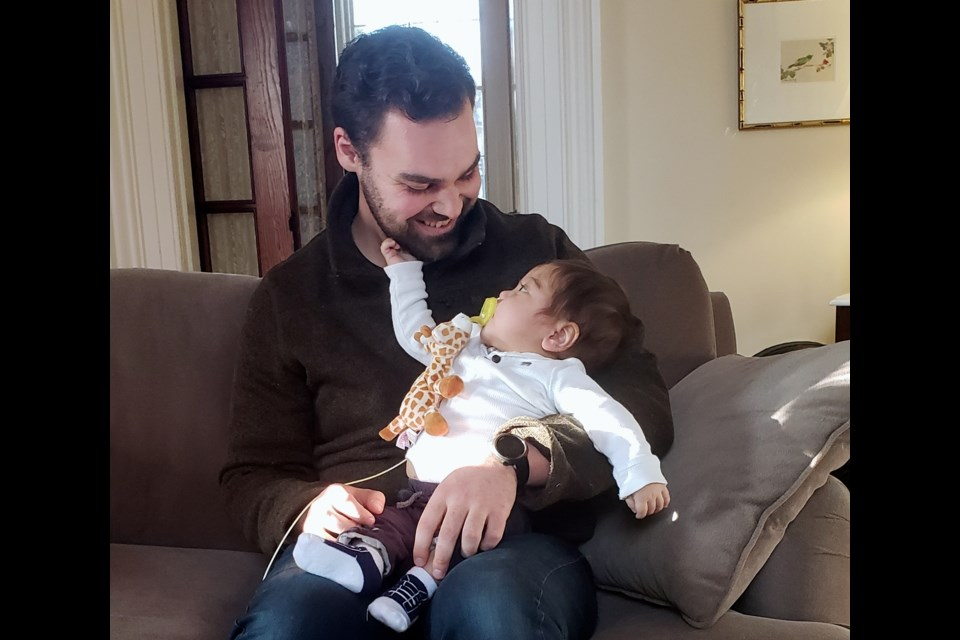
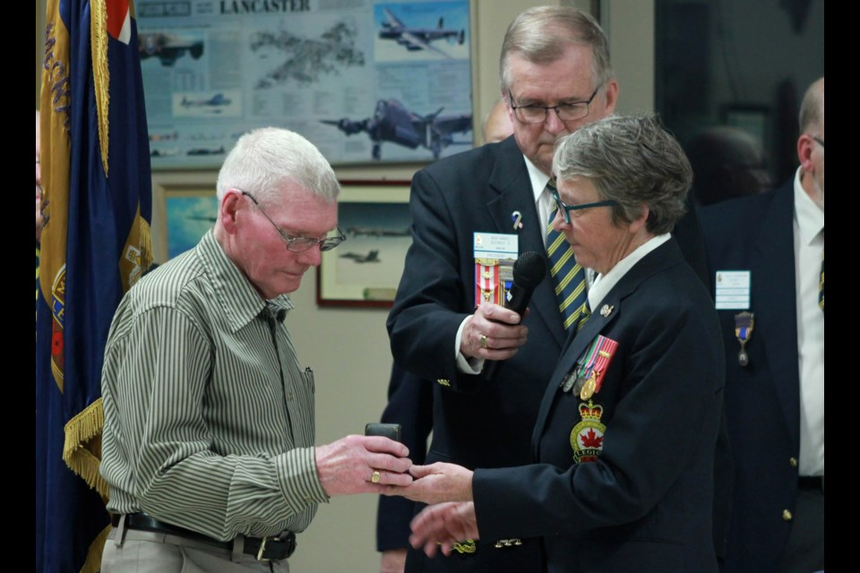

Broadcast
TV, Web an Radio Stories.
Friends of missing Canadian-Palestinian journalist call for help in his search
Zaheera Soomar speaks out about Mansour Shouman's disappearance in Gaza.
Canada’s men’s 4x100m relay team, led by Andre De Grasse, clinched Olympic gold in Paris

Ontario had 30 femicides in 30 weeks, new report says as 'same gaps' in support persist
'Every single week, we can expect another woman to be killed by a man closely known to her': advocate
Torontonians get creative and turn a city post into a Lego tower
Little Italy residents spark joy with a Lego tower.
The TTC plans weekend service disruptions but will boost transit options for Taylor Swift’s Eras Tour.

Students, ex-president raise concerns about racism at NSCAD
Current president says school is expanding supports for BIPOC students
Toronto schools implement a classroom cellphone ban, sparking debate among educators, parents, and students.
Community grieves after fire guts century-old clubhouse on Toronto Islands
An early morning fire destroyed a beloved island community center.

Anonymous donor offers $10M to save N.S. church facing demolition. But there's a condition
Local group spent nearly a decade trying to save Église Sainte-Marie in Digby County
Former Raptor Pascal Siakam receives warm ovation in his return to Toronto.
'God help me, please': Woman speaks out after off-leash dogs attack her
Toronto woman mauled by two unleashed dogs while waiting for a bus.

Nova Scotians aren't getting the help they need to remove online intimate images, expert says
Police in N.S. say reports of intimate images online posted without consent are increasing
Young swimmers dive into the Toronto pool where Summer McIntosh once trained.
Vigil held for Adu Boakye — man shot dead in random attack in Toronto
Friends and family remember a hardworking newcomer from Ghana.

Students fuel drive to bring French school to Acadian community in Guysborough County
A new generation of Acadians in Guysborough County wants to connect to its French roots and is fighting to make it happen.
Canada sees a surge in whooping cough cases, raising public health concerns.
Family of man shot by Toronto police fights for justice
Family says Tylor Coore needed help, not force.

After being bullied at school, N.S. boy receives birthday cards from around the world
‘I've never seen this kid happier,’ mom says
Hundreds of illegally dumped tires near Etobicoke’s Mimico Creek raise environmental concerns
Muslim food bank faces shortage of halal meals during Ramadan
Food insecurity worsens for newcomers and low-income families.

''She was a fighter': N.S. author remembered for strength in the face of ALS
Angela Parker-Brown, 50, died Friday with her family by her side
Mona Ayesh, a Toronto woman with family in Gaza, says the temporary ceasefire is a "pause of killing" rather than real relief.
How many FIFA games will Toronto host?
FIFA confirms number of matches for Toronto and Vancouver in 2026 World Cup.

Ukrainian refugee ready to represent Nova Scotia in Canada Games, but there's one problem
Sasha Kaplin doesn't have permanent residency, a requirement to compete
Ugandan opposition leader Bobi Wine visits Toronto refugees with a message of hope
Toronto’s pigeons are on birth control
The city uses rooftop feeders with birth control to manage pigeon population humanely.

Why there is no fencing, safety equipment or lifeguards at Peggys Cove
Over several decades, Nova Scotia landmark has been the site of multiple drownings

Newborns being directed to mobile clinics amid doctor shortage
Unattached newborn clinics have own staff and work within mobile health clinic
The Blue Jays and Texas Rangers battle for AL Wild Card spot
Santa’s helpers in Toronto sort toys for children in need
Volunteers spread holiday cheer with Share A Christmas drive.

Nova Scotians grieve dead, stranded loved ones in Syria and Turkey
Local Turkish and Syrian organizations call for donations to help earthquake victims
Former Raptors coach Nick Nurse returned to Toronto to support a week-long music program he launched for students after the team’s championship win.
Runaway Kangaroo spotted in Oshawa neighbourhood
A kangaroo on the loose in Oshawa had residents doing double takes — and animal services scrambling to catch the runaway marsupial

'I just need a chance to live again': Jamaican migrant worker with cancer begs to stay in N.S.
A seasonal farm worker from Jamaica is fighting to stay in Nova Scotia for cancer treatment, saying it would be a death sentence for her to go home..
Premier Doug Ford reverses controversial Greenbelt decision
Woman dead, 2 injured after driver intentionally struck them in Toronto
Police investigate targeted vehicular attack on pedestrians.

Canadian Blood Services needs Black Canadians to donate, but expert says barriers persist
Canadian Blood Services is urging Black Canadians to help diversify its blood donor and stem cell registry base.
Toronto’s Caribbean Carnival: Kane Grant unveils 'Unapologetic' costume for King and Queen competition
Rally in Mississauga demands action after Gaza blackout
Protesters call for global intervention after Gaza communication collapse.

How Viola Desmond's salon space has been reimagined through art
Those walking along Gottingen Street in Halifax can now step into an art space created to honour civil rights activist Viola Desmond.
PWHL game sells out Scotiabank Arena — a first for women’s hockey
Nearly 100 asylum seekers forced to leave Toronto church shelter
Capacity issues strain emergency housing options.

Turning disaster into art, wood carver makes sculptures from trees downed by Fiona
Jay MacKay has been creating sculptures out of trees that held sentimental value
Louis March remembered as tireless advocate against gun violence
Ontario reverses decision on controversial Greenbelt land swap
Ford government backtracks after major public backlash.

High levels of stress, anxiety among seniors stripped of services in Bridgewater apartments
Community group asks director of residential tenancies to intervene on behalf of residents
Toronto Island residents rally to save arborist's business
Seniors in Bridgewater apartment building fear displacement
Residents feel forced out amid redevelopment pressures.

Dozens of birds hurt by Fiona take refuge in Hope for Wildlife
Storm also brought tropical birds from Bermuda that didn’t survive
Breathing difficulties spike in Toronto amid air quality warnings
Milos Raonic secures spot in National Bank Open second round
Canadian tennis star returns strong after injury setbacks.

Crews going full tilt in Halifax area to clean up after Fiona
Dozens of streets still blocked off by downed trees.
Toronto calls for residents to open rental units to asylum seekers
Man dead after violent altercation in North York
Police investigate deadly confrontation outside parking lot.

N.S. man teams up with Terry Fox's brother to bring Canadian icon's run to Ireland
This year's Terry Fox run in Dublin raised $27K Cdn for the Irish Cancer Society
Barrie residents still feel impact 2 years after tornado
Toronto's streetscape gets an artistic refresh
Local artists add color and creativity to overlooked corners of the city.

Ukrainian medical workers frustrated by 'silence' on Nova Scotia licences
Ukrainian refugees say navigating the health-care system is challenging and discouraging.
East York fastpitch league honors longtime announcer Peter Cripps

Bhangra dancer Gurdeep Pandher spreads joy in Nova Scotia
Pandher has danced in Halifax, Inverness, Mabou and Peggys Cove

Group scrambles to bring 30-tonne dead humpback whale to Halifax shore
Recovery efforts are being hampered by whale's size and structure of Halifax harbour.
How the village of Eden Mills is approaching complete carbon neutrality
With a passion for the environment and the community, Eden Mills has reached 75 per cent carbon neutrality
A double-double and a morning smile: local Tim Hortons server a social media hit for his fun service
People have been taking to social media to sing praises of Damien Smith
Guelph scientist leads climate research in The Great White North
Pierre Fogal leads a team of researchers monitoring the weather and climate change in the Arctic
Guelph's Syrian Experience: Raising young children in a new land
In the first of a five-part series, we look at the challenges and successes of the Syrian refugees who came to Guelph three years ago
'He was heaven sent:' Guelph stranger saves baby's life by donating own liver
Baby Matthew and liver donor Derek Roy are both in good health after surgery
Veteran flies across Canada to return a war medal to a Guelph stranger
Veteran Susan Giebel travelled from Alberta to Guelph to return a medal she found to a family she never met